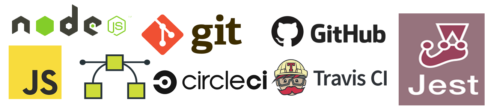

Blocktron


Blocktron is a simple yet elegant and efficient blockchain framework written in Javascript for Node.js environment. Blocktron is aimed at developing generic, multipurpose blockchain platforms and softwares for various application use-cases, and also for educational and awareness purposes. This library is built from the ground up using only opensource technologies.
blocktron-node
blocktron-node is the single server node of the entire distributed blocktron system. A single node of the entire distributed system utilizes the blocktron-lib js blockchain library internally to build the blockchain core data structures and functionalities.
Motivation
The blockchain is an undeniably ingenious invention – the brainchild of a person or group of people known by the pseudonym, Satoshi Nakamoto. But since then, it has evolved into something greater, and the main question every single person is asking is: What is Blockchain? By allowing digital information to be distributed but not copied, blockchain technology created the backbone of a new type of internet. Originally devised for the digital currency, Bitcoin, the tech community is now finding other potential uses for the technology.
As a computer engineer, I am passionate about solving different problems the world is facing today, through softwares, computing and other digital systems, to enhance the world as a better place for humanity. And blockchain has got a lot of attention in the recent years through the rise of certain Dapps platforms and obviously due to the hike in the value of bitcoins. Now the mission of Blocktron project is to contribute to that situation by developing blockchain technology to its next level and make it available to the world in its most simple and efficient form, so that the world can make the most of it.
Build status
This project has been set up with Travis-CI and Circle-CI where the continuous integration and continuous deployment tests are being run on every code commits to ensure code quality and code integrity. These badges shows the tests and builds passing or failing.
- CircleCI -
- Travis-CI -
Technology Stack
Blocktron project is built with the following technologies:
- JavaScript
- Node.js
- blocktron-lib
- Git
- Github
- Travis-CI
- CircleCI
- Jest

Why JavaScript & Node.js
Getting Started
Installation
Prerequisites
Dependency
Changelog
API Reference
Tests
Continuous Integration
Continuous Integration services monitor repositories for changes, then automatically run unit tests on your behalf, typically in a containerized environment. To test this setup works in a continuous integration environment, an integration was done with Travis CI & CircleCI. According to the Travis Node.js Documentation, Travis automatically runs npm install and npm test. The only additional thing I had to add to the Travis configuration was to run npm run build before running the tests. The working Travis config looks like this:
language: node_js
node_js:
- stable
install:
- npm install
script:
- npm run build-prod
- npm testHere's the Travis build page for this project, which shows the tests passing.
CircleCI is similar to Travis-CI, but is more extensible and has much more control over the build process. The CircleCI config looks like this:
# Javascript Node CircleCI 2.0 configuration file
#
# Check https://circleci.com/docs/2.0/language-javascript/ for more details
#
version: 2
jobs:
build:
docker:
# specify the version you desire here
- image: circleci/node:7.10
# Specify service dependencies here if necessary
# CircleCI maintains a library of pre-built images
# documented at https://circleci.com/docs/2.0/circleci-images/
# - image: circleci/mongo:3.4.4
working_directory: ~/repo
steps:
- checkout
# Download and cache dependencies
- restore_cache:
keys:
- v1-dependencies-{{ checksum "package.json" }}
# fallback to using the latest cache if no exact match is found
- v1-dependencies-
- run: npm install
- save_cache:
paths:
- node_modules
key: v1-dependencies-{{ checksum "package.json" }}
# run tests!
- run: npm run build-dev
- run: npm run build-prod
- run: npm testContributing
Please read CONTRIBUTING.md for details on contributing to the project and CODE_OF_CONDUCT.md for the process for submitting pull requests to us.
Versioning
We use SemVer for versioning. For the versions available, see the tags on this repository.
Authors
- Sandeep Vattapparambil - Founder, Lead Developer & Maintainer
See also the list of contributors who participates in this project.
License
The MIT License
Copyright (c) 2018- Sandeep Vattapparambil, http://www.sandeepv.in
Permission is hereby granted, free of charge, to any person obtaining a copy of this software and associated documentation files (the "Software"), to deal in the Software without restriction, including without limitation the rights to use, copy, modify, merge, publish, distribute, sublicense, and/or sell copies of the Software, and to permit persons to whom the Software is furnished to do so, subject to the following conditions:
The above copyright notice and this permission notice shall be included in all copies or substantial portions of the Software.
THE SOFTWARE IS PROVIDED "AS IS", WITHOUT WARRANTY OF ANY KIND, EXPRESS OR IMPLIED, INCLUDING BUT NOT LIMITED TO THE WARRANTIES OF MERCHANTABILITY, FITNESS FOR A PARTICULAR PURPOSE AND NONINFRINGEMENT. IN NO EVENT SHALL THE AUTHORS OR COPYRIGHT HOLDERS BE LIABLE FOR ANY CLAIM, DAMAGES OR OTHER LIABILITY, WHETHER IN AN ACTION OF CONTRACT, TORT OR OTHERWISE, ARISING FROM, OUT OF OR IN CONNECTION WITH THE SOFTWARE OR THE USE OR OTHER DEALINGS IN THE SOFTWARE.
Acknowledgements
Made with ❤️ by Sandeep Vattapparambil.